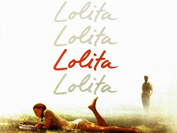

Экспонат номер два - записная книжечка в черном переплете из
искусственной кожи, с тисненым золотым годом (1947) лесенкой в верхнем левом
углу. Описываю это аккуратное изделие фирмы Бланк, Бланктон, Массач., как
если бы оно вправду лежало передо мной. На самом же деле, оно было
уничтожено пять лет тому назад, и то, что мы ныне рассматриваем (благодаря
любезности Мнемозины, запечатлевшей его) - только мгновенное воплощение,
щуплый выпадыш из гнезда Феникса.
Отчетливость, с которой помню свой дневник, объясняется тем, что писал
я его дважды. Сначала я пользовался блокнотом большого формата, на отрывных
листах которого я делал карандашные заметки со многими подчистками и
поправками; все это с некоторыми сокращениями я переписал мельчайшим и самым
бесовским из своих почерков в черную книжечку.
Тридцатое число мая официально объявлено Днем Постным в Нью-Гампшире,
но в Каролинах, например, это не так. В 1947 году в этот день из-за поветрия
так называемой "желудочной инфлюэнцы" рамздэльская городская управа уже
закрыла на лето свои школы. Незадолго до того я въехал в Гейзовский дом, и
дневничок, с которым я теперь собираюсь познакомить читателя (вроде того как
шпион передает наизусть содержание им проглоченного донесения), покрывает
большую часть июня. Мои замечания насчет погоды читатель может проверить в
номерах местной газеты за 1947 год.
Четверг. Очень жарко. С удобного наблюдательного пункта (из окна ванной
комнаты) увидел, как Долорес снимает белье с веревки в яблочно-зеленом свете
по ту сторону дома. Вышел, как бы прогуливаясь. Она была в клетчатой
рубашке, синих ковбойских панталонах и полотняных тапочках. Каждым своим
движением среди круглых солнечных бликов она дотрагивалась до самой тайной и
чувствительной струны моей низменной плоти. Немного погодя села около меня
на нижнюю ступень заднего крыльца и принялась подбирать мелкие камешки,
лежавшие на земле между ее ступнями - острые, острые камешки, - и в придачу
к ним крученый осколок молочной бутылки, похожий на губу огрызающегося
животного, и кидать ими в валявшуюся поблизости жестянку. Дзинк. Второй раз
не можешь, не можешь - что за дикая пытка - не можешь попасть второй раз.
Дзинк. Чудесная кожа, и нежная и загорелая, ни малейшего изъяна. Мороженое с
сиропом вызывает сыпь: слишком обильное выделение из сальных желез, питающих
фолликулы кожи, ведет к раздражению, а последнее открывает путь заразе. Но у
нимфеток, хоть они и наедаются до отвала всякой жирной пищей, прыщиков не
бывает. Боже, какая пытка - этот атласистый отлив за виском, переходящий в
ярко русые волосы! А эта косточка, вздрагивающая сбоку у запыленной
лодыжки...